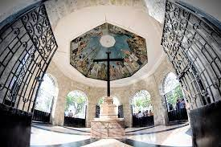
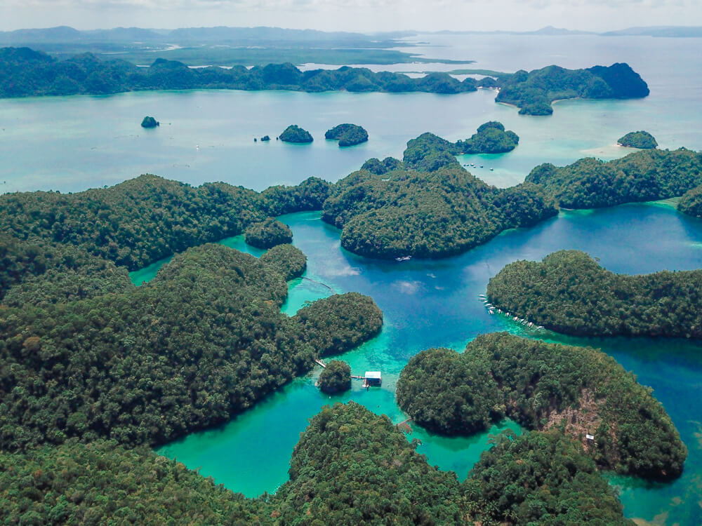
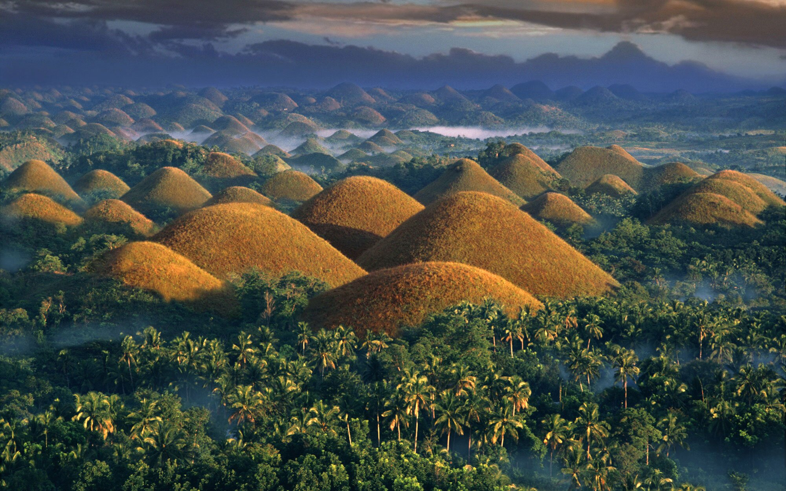

Tourist Spots in Visayas
- Cebu - Magellan's Cross
- Magellan's Cross is a huge wooden Christian cross that marks the arrival of
Portuguese explorer Ferdinand Magellan on the island of Sugbu (now Cebu) roughly 500 years ago.

- Bacolod - The ruins
- Formally known as the Taj Mahal of the Philippines, the ruins is and ancestral mansion
situated in Talisay, just outside of Bacolod City. The mansion was built in the early 1900's by the
wealthy sugar baron Don Mariano Ledesma Lacson in memory of his wife. Maria Braga Lacson died during the
birth of her 11th child.Bacolod is known for so many things—the MassKara Festival, the delicious Chicken
Inasal, the smiling and hospitable locals, and of course, the beautiful places to visit in Bacolod.
Bacolod is the capital city of the province of Negros Occidental in the Philippines.

- Siargao Island
- "Surfing Capital of the Philippines"
Known as the “Surfing Capital of the Philippines”, Siargao is mainly responsible for introducing surfing
to the country. Apart from surfing, Siargao is also open to other activities such as cave explorations
and rock climbing.

- Boracay
- Boracay Island, one of the top beaches in the Philippines, is blessed with a long
stretch of powdery white sand beach (called White Beach), crystal clear and azure waters,
a stunning sunset, and more. The island doesn't fall short on adventures and activities for people of
all ages.

- Bohol - Chocolate Hills
- The Chocolate Hills are a geological formation in the Bohol province of the Philippines. There are at least 1,260 hills but there may be as many as 1,776 hills spread over an area of more than 50 square kilometres.
They are covered in green grass that turns brown during the dry season, hence the name.
